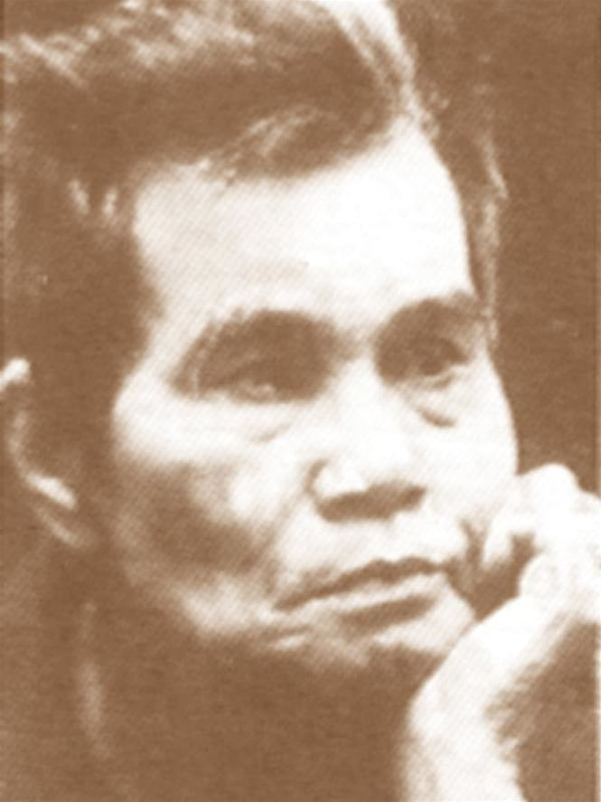

SINH ngày 13 Septembre 1913 ở Hà-nội.
Tự học ở Hà-nội.
Hiện viết giúp: Tiểu thuyết thứ bảy, Truyền bá, Phổ thông bán nguyệt san.
[1] Thi sĩ xin dấu tên thật

.
Viết đến đây tôi đã định khép cửa lại, dầu có thiên tài đến gõ cũng không mở. Thế mà lại phải mở cửa để đón một nhà thơ nữa: Trần Huyền Trân, Trần Huyền Trân, con người có tên lạ ấy, không phải lâ một thiên tài. Nhưng tôi ưa những văn thơ hiền lành và ít nói yêu đương.
Cũng có lần thi nhân tả tình tương-tư:
Xa nhau gió ít lạnh nhiều,
Lửa khuya tàn chậm, mưa chiêu đổ nhanh.
Nhưng thường thì Huyền Trân tìm thi hứng, hoạc trong những cảnh đời buồn bã như cảnh đời cùng của thi si Tản Đà:
Có đàn con trẻ nheo nheo,
Có dăm món nợ eo sèo bên tai.
Chừng lâu rượu chẳng về chai,
Nhện giăng giá bút một vài đường tơ.
Nghiên son lớp lớp bụi mờ,
Mọt ôn tờ lại từng tờ cổ thi.
hoặc trong cảnh đồng quê?
Mặt trời say rượu tắm ven đông
Nước thẹn bâng khuâng ửng má hồng.
Bầy sẻ đâu về cười khúc khích
Rủ nhau lúa chín trộm vài bông.
Đồng quê của Huyền Trân đả mất hết vẻ quê mùa. Nó làm duyên làm dáng như một cô gái thành thị.
Huyền Trân ưa nhất là nói tình mẹ con.
Người gợi cái hình ảnh Phạm ngũ Lão sau khi dẹp giặc Nguyên. Đêm ấy tiệc khao quân vừa tan. Ai nấy đều yên ngủ. Cho đến chiến mã cũng:
Đuôi mừng phủi sạch bụi binh đao.
Giữa lúc ấy Phạm ngũ Lão một mình ngồi trong trướng, lòng băn khoăn nhớ mẹ:
Binh thư ngừng giở, bào quên cởi.
Đèn nhớ mong ai bấc lụi dần.
Thế rồi tướng quân quất ngựa tìm về chốn
Nằm ôm gốc gạo lều dăm mái
Cánh liếp che sương hé đợi chờ.
Than ôi! Tướng quân về tới nơi thì mẹ già không còn nữa.
Thơ Huyền Trân không xuất sắc lắm. Nhưng sau khi đọc hoài những câu rặt anh anh em em tôi đã tìm thấy ở đây cái thú cửa người đi đổi gió.
Novembre 1941
KHÓC TẢN ĐÀ
Đêm kia sao rụng trên trời,
Cõi trần lạnh lẽo mất người bạn thơ.
Nước non này mảnh dư đồ,
Mà hồn non nước bây giờ tìm đâu.
Lấy gì trời đổi cho nhau,
Người sương gió nhuộm mái đầu bấy nay?
*
Bao lâu tỉnh tỉnh say say,
Say say tỉnh tỉnh lần này mà thôi!
Chiều nay tám chín phương trời,
Muôn ngàn người có một người đi qua.
Dở dang này những ngày xưa:
"Người non nước hẹn thế cờ nước non.
Khối tình lớn, khối tình con,
Khối tình bóp bẹp vo tròn lại nguyên."
Lòng thơ lấy rượu làm duyên,
Hồn thơ xuôi ngược con thuyền "An Nam".
Não nùng chớp bể mưa ngàn,
Thuyền nan hờn sóng thuyền nan trở về.
Mai mai, mốt mốt, kia kia,
Cảnh rầu rỉ cảnh lòng tê tái lòng!
Hôm nao vút cánh chim hồng,
Mình không thẹn bóng, bóng không thẹn mình.
Giờ sao thui thủi gia đình,
Rượu cay càng gởi bất bình càng cay.
Mịt mù Nam, Bắc, Đông, Tây,
Đã đầy mộng lớn, đã đầy mộng con!
Còn gì là tấm lòng son!
Thân tàn một kiếp, chí tròn bốn phương.
Rồi... gió sương trả gió sương,
Nét thơ xoá "sổ đoạn trường" ra đi!
9/6/1939
TƯƠNG TƯ
phải đây mùa nhớ thương nhau
chim ngoài ngọn gió hoa đầu cành mưa
biết yêu thì khổ có thừa
hình dung một thoáng tương tư chín chiều
xa nhau gió ít lạnh nhiều
lửa khuya tàn chậm mưa chiều đổ nhanh
bóng đơn đi giữa kinh thành
nhìn duyên thiên hạ nghe tình người ta
đêm về hương ngát bên hoa
tỉnh ra thì lại vẫn là chiêm bao